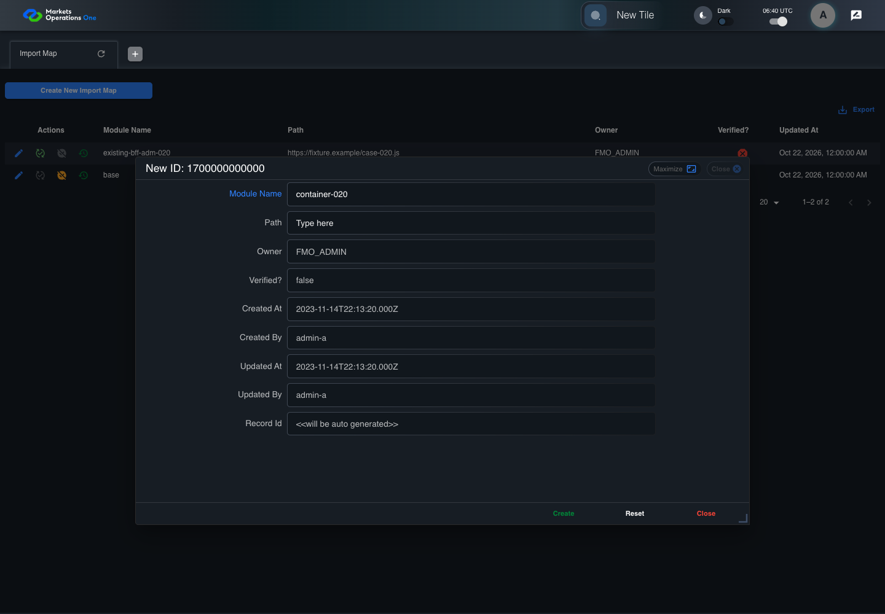
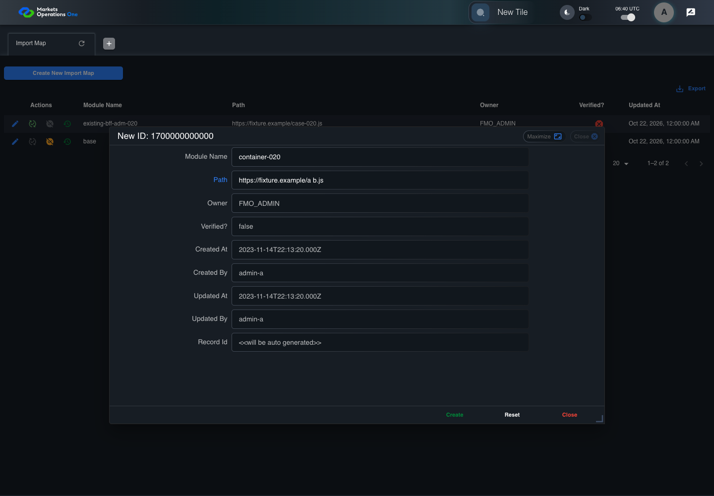

BFF-ADM-020 current BFF administration through actual UI
FAIL · application/run-072/bff-adm-020-current-bff-administration-through-actual-ui-0e8610cd9aa0-attempt-1 · ACTUAL_APPLICATION_LOCAL_SERVICES
Actual current React and exact-current BFF admin controllers/services/JPA with actual migration DDL in disposable PostgreSQL. Controlled OUD/EMS2 identities and local Spring bootstrap. Fixture SQL seeds/mutates isolated records; service errors are actual database errors. Undefined agreed messages remain unresolved acceptance.
2026-10-22T06:40:14.263Z to 2026-10-22T06:40:25.024Z
Assertions and result · Artifact manifest · Exact run inputs and source hashes
Result SHA-256:b29a3fb49d9f13f72e9d56d394e9aab7da0ac06e718972cf75ac0a3530a96ee6Retained failure details
[
{
"message": "Error: \u001b[2mexpect(\u001b[22m\u001b[31mlocator\u001b[39m\u001b[2m).\u001b[22mtoBeVisible\u001b[2m(\u001b[22m\u001b[2m)\u001b[22m failed\n\nLocator: locator('[role=\"tabpanel\"]:visible').locator('[role=\"dialog\"]').filter({ has: getByText(/^(?:new|edit|verify|deactivate) ID:/) })\nExpected: visible\nTimeout: 5000ms\nError: element(s) not found\n\nCall log:\n\u001b[2m - Expect \"toBeVisible\" locator('[role=\"tabpanel\"]:visible').locator('[role=\"dialog\"]').filter({ has: getByText(/^(?:new|edit|verify|deactivate) ID:/) }) with timeout 5000ms\u001b[22m\n\u001b[2m - waiting for locator('[role=\"tabpanel\"]:visible').locator('[role=\"dialog\"]').filter({ has: getByText(/^(?:new|edit|verify|deactivate) ID:/) })\u001b[22m\n",
"stack": "Error: \u001b[2mexpect(\u001b[22m\u001b[31mlocator\u001b[39m\u001b[2m).\u001b[22mtoBeVisible\u001b[2m(\u001b[22m\u001b[2m)\u001b[22m failed\n\nLocator: locator('[role=\"tabpanel\"]:visible').locator('[role=\"dialog\"]').filter({ has: getByText(/^(?:new|edit|verify|deactivate) ID:/) })\nExpected: visible\nTimeout: 5000ms\nError: element(s) not found\n\nCall log:\n\u001b[2m - Expect \"toBeVisible\" locator('[role=\"tabpanel\"]:visible').locator('[role=\"dialog\"]').filter({ has: getByText(/^(?:new|edit|verify|deactivate) ID:/) }) with timeout 5000ms\u001b[22m\n\u001b[2m - waiting for locator('[role=\"tabpanel\"]:visible').locator('[role=\"dialog\"]').filter({ has: getByText(/^(?:new|edit|verify|deactivate) ID:/) })\u001b[22m\n\n at /Users/lushevol/code/github/ratan-release-impact/workbench/e2e/audit-specs/bff-admin.spec.ts:43:117\n at AuditCapture.step (/Users/lushevol/code/github/ratan-release-impact/workbench/e2e/support/audit-fixture.ts:94:21)\n at /Users/lushevol/code/github/ratan-release-impact/workbench/e2e/audit-specs/bff-admin.spec.ts:18:27",
"location": {
"file": "/Users/lushevol/code/github/ratan-release-impact/workbench/e2e/audit-specs/bff-admin.spec.ts",
"column": 117,
"line": 43
},
"snippet": " 41 | if(text.startsWith('the next BFF repository save')){await app.fixture('seed',{failure:`${app.resource}-save`});return;}\n 42 | if((match=/^Admin [ABCS] clicks the button labeled \"([^\"]+)\"/.exec(text))){if(match[1].startsWith('Create New')){const nativeNow=Date.now();if(creationClock)await page.clock.setFixedTime(new Date(1700000000000));await app.ui.panel.getByRole('button',{name:match[1],exact:true}).click();if(creationClock)await page.clock.setFixedTime(new Date(nativeNow));}else {const row= /row with \"Record Id\" \"(\\d+)\"/.exec(text)?.[1];if(row){await app.ui.reveal('actions',row);await app.ui.action(match[1],row).click();}else await app.clickFooter(match[1]);}return;}\n> 43 | if((match=/^the dialog titled \"([^\"]+)\" (is visible|remains visible)/.exec(text))){await expect(app.ui.dialog()).toBeVisible();await expect(app.ui.dialog()).toContainText(match[1]);return;}\n | ^\n 44 | if((match=/^Admin [ABCS] fills the (?:textbox|textarea) labeled \"([^\"]+)\" with exactly (\\d+) ASCII \"a\" characters/.exec(text))){await app.fill(match[1],'a'.repeat(Number(match[2])));return;}\n 45 | if((match=/^Admin [ABCS] fills the (?:textbox|textarea) labeled \"([^\"]+)\" with \"(.*)\" in dialog/.exec(text))){await app.fill(match[1],match[2].replaceAll('\\\\\"','\"').replaceAll('\\\\t','\\t'));return;}\n 46 | if((match=/^Admin [ABCS] clicks the combobox labeled \"([^\"]+)\"/.exec(text))){await app.ui.field(match[1],'combobox').click();return;}"
}
]Machine observations
- actual-identity-projection.json
e9657487666f33a768c99e831f0ba4d69bbdd0b89dbdad978b10095a78fd620d - baseline-inputs.json
740c4aaf110d16888df91120a1567ea1f4614eef75f6ee98bc7fa883ccff9346 - bff-boundary.json
36c2f691d7a819dff3da6155a46de0c569332c5039f283a74c60d8789b139889 - committed-ui-submission-comparisons.json
e740712eb2b1493a49958597bbb0b6df6b0b06f301ec4cb1cecfc24cf301e431 - creation-clock.json
071da6778abfb7d02ef1827c503318f778cd5aca18e6944e77be26fa0a68d5d7 - fixture-step-4.json
75cc0260b6cdba5ff5cf9f186ee7009386328afc2903ed04bcd9806978ffa2fb - fixture-step-5.json
1c4ec7f94930140fc234afc4716f52429208c08bdfa5b3f771bf86c20f5163e6 - initial-persisted-records.json
cef6bc49682cbd64906728a02136ba3cb15a1d592cde66dcd2c73230c39a33ad - persisted-after-submit.json
c9853b12e31f0978879fc34d2576257e5a6829ad1d1f33a2a13f7cb3a19de3ea - ui-origin-bff-requests.json
42dca2df9285de02d47182e170a64eee17b6faf1cef2be8b1fdf7275b18a5f45
Screenshot capture: CAPTURED. Named frames: 12.
Step screenshot evidence: INCOMPLETE. 11/13 canonical steps have execution screenshots.
Step 12 has no screenshot from an executed step. Step 13 has no screenshot from an executed step.
Canonical step timeline
Given Admin A uses subject "admin-a" with role "FMO_ADMIN" in an isolated authenticated browser
Execution: PASSED.1. step-01 Visible state after step 1: Given Admin A uses subject "admin-a" with role "FMO_ADMIN" in an isolated authenticated browser
2026-10-22T06:40:17.764Z · 1440×1000
Step: /Users/lushevol/code/github/ratan-release-impact/workbench/tasks/ui-test-coverage-20261022/test-cases.md:15495
SHA-256:41fb4494bc1a532f0abe3297efc70a8f262e10cd51c3b9dbdc184cb917d85ff8And the controlled Import Map fixture records the initial grid rows and persisted values
Execution: PASSED.
2. step-02 Visible state after step 2: And the controlled Import Map fixture records the initial grid rows and persisted values
2026-10-22T06:40:17.933Z · 1440×1000
Step: /Users/lushevol/code/github/ratan-release-impact/workbench/tasks/ui-test-coverage-20261022/test-cases.md:15496
SHA-256:41fb4494bc1a532f0abe3297efc70a8f262e10cd51c3b9dbdc184cb917d85ff8And the controlled creation clock returns 1700000000000 milliseconds
Execution: PASSED.
3. step-03 Visible state after step 3: And the controlled creation clock returns 1700000000000 milliseconds
2026-10-22T06:40:17.978Z · 1440×1000
Step: /Users/lushevol/code/github/ratan-release-impact/workbench/tasks/ui-test-coverage-20261022/test-cases.md:15497
SHA-256:41fb4494bc1a532f0abe3297efc70a8f262e10cd51c3b9dbdc184cb917d85ff8And the baseline fixture data defines "Module Name" as "container-020"
Execution: PASSED.
4. step-04 Visible state after step 4: And the baseline fixture data defines "Module Name" as "container-020"
2026-10-22T06:40:18.028Z · 1440×1000
Step: /Users/lushevol/code/github/ratan-release-impact/workbench/tasks/ui-test-coverage-20261022/test-cases.md:15498
SHA-256:41fb4494bc1a532f0abe3297efc70a8f262e10cd51c3b9dbdc184cb917d85ff8And the baseline fixture data defines "Path" as "https://fixture.example/case-020.js"
Execution: PASSED.
5. step-05 Visible state after step 5: And the baseline fixture data defines "Path" as "https://fixture.example/case-020.js"
2026-10-22T06:40:18.077Z · 1440×1000
Step: /Users/lushevol/code/github/ratan-release-impact/workbench/tasks/ui-test-coverage-20261022/test-cases.md:15499
SHA-256:41fb4494bc1a532f0abe3297efc70a8f262e10cd51c3b9dbdc184cb917d85ff8When Admin A clicks the button labeled "Create New Import Map" on the Import Map administration page
Execution: PASSED.6. step-06 Visible state after step 6: When Admin A clicks the button labeled "Create New Import Map" on the Import Map administration page
2026-10-22T06:40:18.293Z · 1440×1000
Step: /Users/lushevol/code/github/ratan-release-impact/workbench/tasks/ui-test-coverage-20261022/test-cases.md:15500
SHA-256:ab5279f940af1e09344c76f75af8be5b813a2cf8547f7dfa1553a898366ffcfeThen the dialog titled "new ID: 1700000000000" is visible on the Import Map administration page
Execution: PASSED.7. step-07 Visible state after step 7: Then the dialog titled "new ID: 1700000000000" is visible on the Import Map administration page
2026-10-22T06:40:18.364Z · 1440×1000
Step: /Users/lushevol/code/github/ratan-release-impact/workbench/tasks/ui-test-coverage-20261022/test-cases.md:15501
SHA-256:0fa4f8d5884df267ef0cccee8fb297f918a0329d36e6da0c970258a665110e5dWhen Admin A fills the textbox labeled "Module Name" with "container-020" in dialog "new ID: 1700000000000"
Execution: PASSED.
8. step-08 Visible state after step 8: When Admin A fills the textbox labeled "Module Name" with "container-020" in dialog "new ID: 1700000000000"
2026-10-22T06:40:18.807Z · 1440×1000
Step: /Users/lushevol/code/github/ratan-release-impact/workbench/tasks/ui-test-coverage-20261022/test-cases.md:15502
SHA-256:63ecf3faaa7007e03eb9f6015b462b38638eb1231f487cc32f41155ac0be13dfAnd Admin A fills the textbox labeled "Path" with "https://fixture.example/a b.js" in dialog "new ID: 1700000000000"
Execution: PASSED.
9. step-09 Visible state after step 9: And Admin A fills the textbox labeled "Path" with "https://fixture.example/a b.js" in dialog "new ID: 1700000000000"
2026-10-22T06:40:19.229Z · 1440×1000
Step: /Users/lushevol/code/github/ratan-release-impact/workbench/tasks/ui-test-coverage-20261022/test-cases.md:15503
SHA-256:c486a11b20f97665060a018e737cd288350aa27a1a8ca7933d3218fe8bd9be8bAnd Admin A clicks the button labeled "Create" in dialog "new ID: 1700000000000"
Execution: PASSED.10. step-10 Visible state after step 10: And Admin A clicks the button labeled "Create" in dialog "new ID: 1700000000000"
2026-10-22T06:40:19.499Z · 1440×1000
Step: /Users/lushevol/code/github/ratan-release-impact/workbench/tasks/ui-test-coverage-20261022/test-cases.md:15504
SHA-256:02f051a154e44712f684e1c1ccfdbc45532c9e98f289c30fa834ed595e50bd3cThen the dialog titled "new ID: 1700000000000" remains visible on the Import Map administration page
Execution: FAILED.
11. step-11-failure Visible state when step 11 failed. Later steps did not execute.
2026-10-22T06:40:24.567Z · 1440×1000
Step: /Users/lushevol/code/github/ratan-release-impact/workbench/tasks/ui-test-coverage-20261022/test-cases.md:15505
SHA-256:02f051a154e44712f684e1c1ccfdbc45532c9e98f289c30fa834ed595e50bd3cAnd the alert with severity "error" in the portal snackbar displays the agreed message for a field validation error identifies the unsafe whitespace
Execution: NOT_EXECUTED.No screenshot is recorded for this step. No executed state is claimed.
And the Import Map data grid with column "Record Id" row identifiers and loaded field values equal the initial grid snapshot on the Import Map administration page
Execution: NOT_EXECUTED.No screenshot is recorded for this step. No executed state is claimed.
Additional named frames

The visible state when the test failed.
2026-10-22T06:40:24.640Z · 1440×1000Step: Test source: /Users/lushevol/code/github/ratan-release-impact/workbench/e2e/audit-specs/bff-admin.spec.ts:11
SHA-256:
02f051a154e44712f684e1c1ccfdbc45532c9e98f289c30fa834ed595e50bd3cScreenshots establish visible state only. Assertions and traces support functional claims.